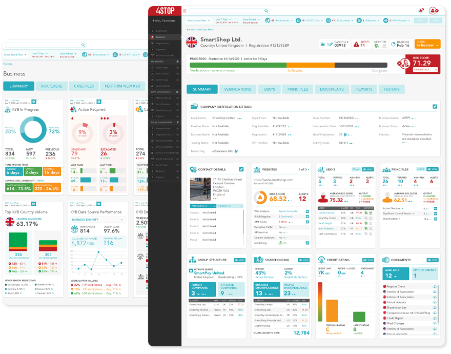
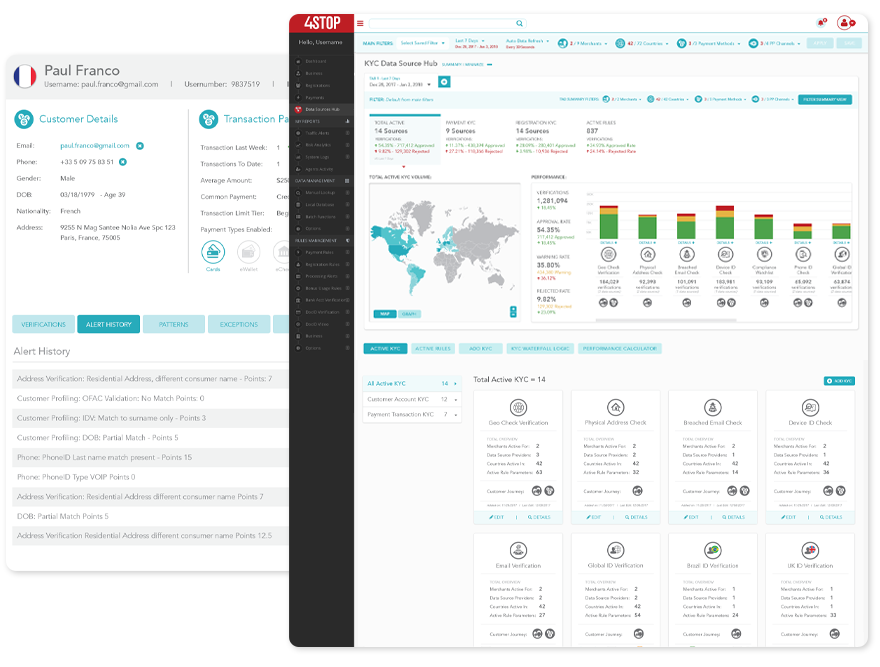
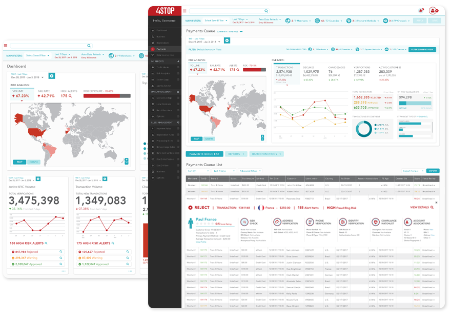

The Future of Payments.
Obtain Future-Proof KYB, KYC and Risk in One API.
Published on May 27th, 2020. View Article on The BR Forbes Brandvoice or on the Business Reporter.
Online entities have always been continually managing outside forces from savvy competitors, technology demands, customer engagement preferences, regulatory evolutions, and economic changes. Our world can quickly change, as the global Covid-19 pandemic illustrates. We have already seen unprecedented changes in how people live and work globally and how online businesses thrive to adapt thanks to the pandemic, and we anticipate that Covid-19 will eventually spark an even greater wave of online innovation.
With global restrictions and social distancing engagements that would often take place in person - from communications to shopping and banking - increasingly move online. China saw a 215 per cent year-on-year growth in online grocery sales between January and February. In Italy there was an increase of 30 per cent in internet usage from February to March. And US online sales have increased by 52 per cent, compared with the same time frame a year ago, with an increase in 8.8 per cent of online shoppers since the coronavirus began.
But this increase in global online activity and transactional volumes also brings greater opportunities for fraudsters. Communication from governments, organisations and companies regarding the virus gives criminals ample ways to capitalise with phishing scams, increasing customer vulnerability. Many marketplaces have struggled to cope with the hugely increased demand, making the prevention of fraud all the more difficult. Furthermore, businesses operations have dramatically shifted with people working remotely, making it more challenging to efficiently manage data security, risk screening and transactional monitoring. It is essential for businesses globally to rethink strategy, sync with leading technology developments and adapt their business mantras for future-proofed sustainability.
Data aggregation, agility, automation and consolidated view of risk and vendors will become vital for any online business. Implementing Know Your Customer (KYC) data services can take many businesses months to integrate, puts a strain on development IT resources and increases costs. A lot of companies end up just integrating the bare minimum for compliance. At a time like now, when many businesses need to adapt their risk processes quickly, it is not feasible to begin integrating multiple third-party data providers, automation and AI in a timely way, unless they partner with an agile orchestration hub. Integrating with a data aggregator partner with anti-fraud technology allows for quick adaptation of risk processes for the present and the future.
Founded in 2016, 4Stop recognised that the amount of data coming online, and the volume of providers giving access to that data, would lead to a natural demand for data aggregation. To make data more accessible, digestible and easy to manage through automation, intelligent risk analysis and decision-making frameworks must be adopted. As the industry has grown to thousands of data providers, 4Stop is in a unique position to provide access to these varying risk data reserves through a single end-point. 4Stop in on a mission to remove the complexity of risk management integrations and manual due-diligence, and establish a real all-in-one solution, using KYB, KYC, compliance and fraud prevention technology.
For online entities that onboard merchants, obtaining a harmonised view of the risk associated comes with an array of cumbersome processes, manual due-diligence and heightened pressure to mitigate fraud at the first touchpoint of a business relationship. Manual processes bring an abundance of cost and resource demands to an organisation, along with long-delayed onboarding times, which, in turn, affect the viability of business revenue.

The 4Stop KYB solution dramatically streamlines business onboarding using a data suite specific to underwriting, leveraging modern technologies, including data automation and customised intelligent workflows, to perform underwriting in near real-time with comprehensive risk assessments. Companies obtain all the data they require in one harmonised view, that includes the entity's identity, corporate structures, registry documentation, online presence analysis, credit reports and identified Ultimate Beneficiary Owners (UBOs) and directors, with enhanced due-diligence KYC readily available. Through data analysis businesses can confidently accept or decline merchant accounts and effortlessly enable continued automated data re-checks and monitoring services to mitigate risk with existing business relationships.
4Stop's KYC data hub encompasses one of the world's largest aggregation of KYC data services in the risk industry, to provide complete worldwide coverage. Businesses have access to thousands of global data points and hundreds of KYC data solutions. They can activate and deploy KYC where they need it globally, at whatever point in their customer journey that they need it. Backed by real-time cascading verification logic that can maximise cost-savings on data of more than 10.9 per cent within the first two months, 4Stop's technology gives businesses the best data experience possible. Additionally, the KYC suite optimises anti-fraud measures through quantifiable decisions based on data science obtained from market profile data simulations. 4Stop continuously aggregates world-class data services and technology so businesses can enjoy all the data and KYC they require from their initial integration, with zero-touch on their internal resources.


 Follow us
Follow us